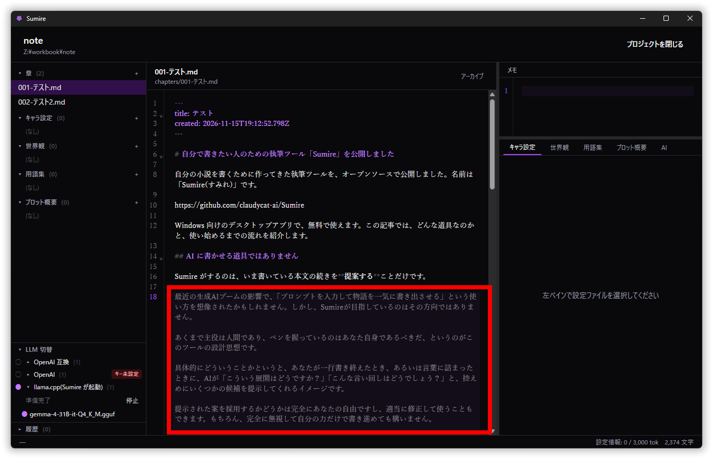

Sumireすみれ
書くのは自分。続きだけ AI に出してもらう、日本語 Web 小説のための執筆ツールです。
Windows（x64）向けのデスクトップアプリ。無料・オープンソース（Apache License 2.0）。最新版は 0.2.0 です。

どんな道具か
- 書いている本文の続きを、AI が薄い色で提案します。Tab で採用、Esc で却下。本文を書くのは書き手自身です。
- ローカル LLM に対応しています。llama.cpp の
llama-serverを Sumire から起動して使えるほか、OpenAI 互換の API を持つ推論サーバーや OpenAI にもつなげます。 - キャラクター、世界観、用語集、プロットの設定ファイルのうち、選んだものだけを、提案のたびに AI へ渡します。
- 提案をメモに退避したり、場面から挿し絵の情景文を作ったりできます。
使い始めるには
Sumire は推論エンジンを持ちません。手元の PC で llama-server と gguf 形式のモデルを用意するか、すでに動かしている推論サーバーにつなぎます。手順は README の「はじめかた」にあります。
配布しているインストーラはコード署名をしていないため、初回の起動時に Windows の SmartScreen の警告が出ます。「詳細情報」から「実行」を押すと起動します。
投稿サイトに出すときは
Tab で採用した提案の文が本文に残っていれば、そこは AI が生成した文章です。小説家になろう、カクヨム、ノベルアップ+ などに投稿するときは、各サイトの規約を確かめ、AI の利用を正しく申告してください。各サイトの区分の整理は README にあります。